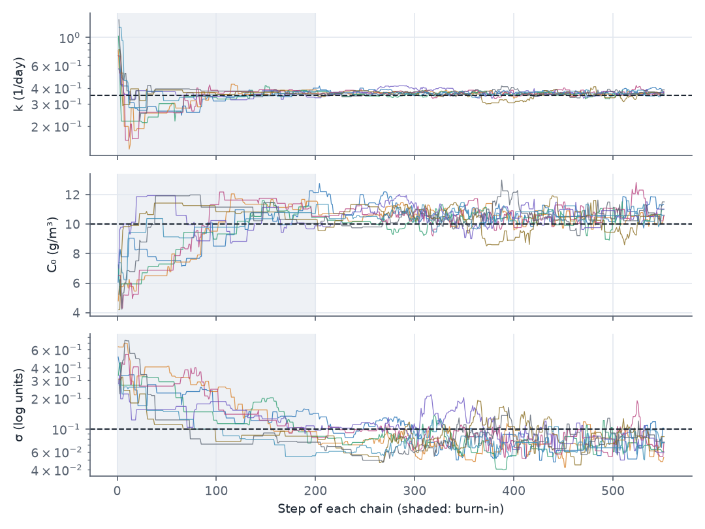
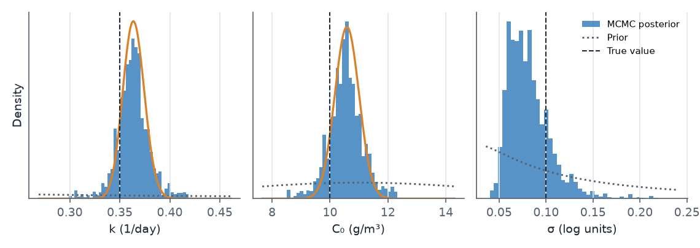
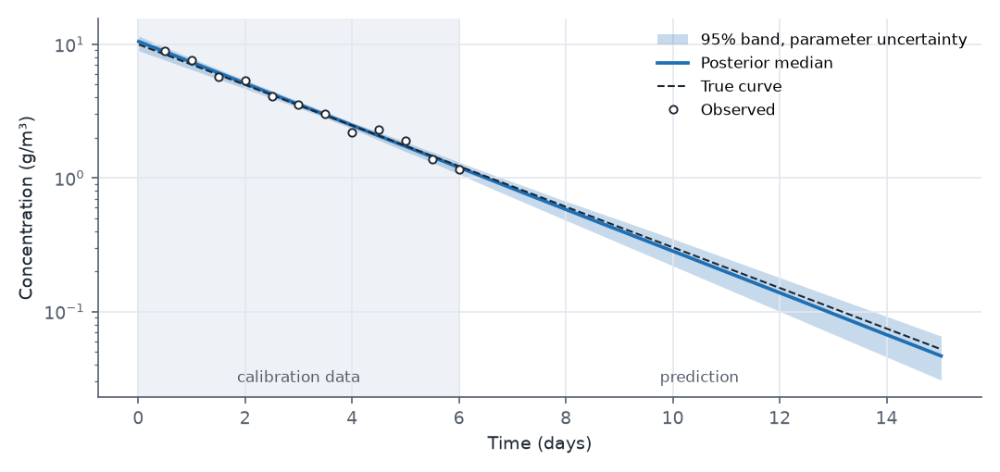
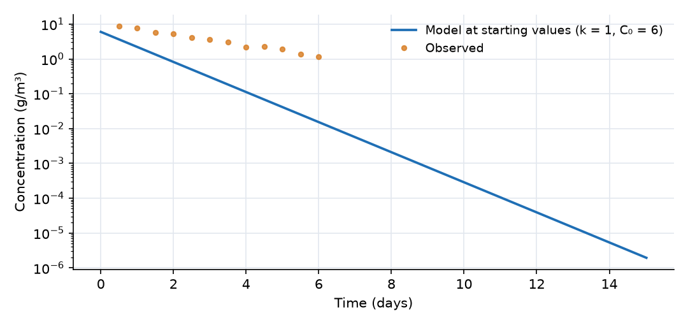

What this model represents
A microcosm test measures how fast a contaminant degrades: a sample of water or slurry is sealed in a vessel and its concentration is measured over a few days. The result usually feeds a prediction, for example the time for a plume to fall below a cleanup level. A single best-fit rate constant hides how uncertain that prediction is. Bayesian calibration with Markov chain Monte Carlo (MCMC) gives the full joint distribution of the parameters given the data, and from it a range of predictions.
The model is deliberately simple: one closed reactor, one constituent, first-order decay. The "observed" data were made from the exact solution at known values (C₀ = 10 g/m³, k = 0.35 1/day) with 10% multiplicative noise, so the posterior can be checked against the truth. Twelve samples over six days is a typical laboratory record, and the question is what it says about the concentration after 15 days.
How it works
The model
The microcosm is a Reactor block of fixed volume V = 0.2 m³ with no flow. The reaction Biodegradation has rate k·C and stoichiometric coefficient −1, so
d(V·C)/dt = −V·k·C, C(0) = C₀
whose solution is C(t) = C₀·exp(−k·t). Three model quantities are calibrated through Parameter objects bound with setasparameter: p_k drives the base_value of the reaction parameter k, p_C0 drives the initial Contaminant:concentration of the block, and p_sigma drives the observation's error_standard_deviation.
The solver step is held at 0.01 day (max_timestep_increase_factor = 1), which keeps the computed curve within 0.6% of the exact solution over the 15 days. With the default growth factor of 50 the step reaches 0.5 day, and the implicit time stepping then slows the computed decay: at day 6 the concentration is 16% above the exact value, more than the measurement noise, which would bias the estimates.
Likelihood and priors
The observation uses error_structure = log-normal, so residuals are taken between log concentrations. With n = 12 points:
−ln L = n·[ MSE/(2σ²) + ln σ ], MSE = (1/n) Σ (ln oᵢ − ln mᵢ)²
This is the same likelihood that the genetic algorithm and Levenberg-Marquardt use. Because σ is a parameter here, its estimate is part of the posterior, and so is its uncertainty.
Each Parameter's low and high define its prior. For normal the prior is a normal distribution with mean (low + high)/2 and standard deviation (high − low)/4; for log-normal it is log-normal with geometric mean √(low·high) and log standard deviation ln(high/low)/4. In both cases low and high are the 2.5% and 97.5% points of the prior, not hard bounds. (The uniform prior, also available, is bounded.) The priors here are wide: for k they span three orders of magnitude.
The sampler
OpenHydroQual runs several Metropolis-Hastings chains in parallel. Each step, every chain proposes a new parameter set from its current one, runs the model and accepts the proposal with probability min(1, p_new/p_old), where
ln p = Σ ln prior(θᵢ) − (−ln L) + Σ_{log-normal i} ln θᵢ
The last term is the Hastings correction for proposals made in log space, which is how parameters with a log-normal prior are perturbed. A rejected proposal repeats the current state. Two proposal types are used in one run:
- Diagonal (start of the run). Each parameter is perturbed independently, by a normal step in log space for log-normal priors or in linear space otherwise. The step is
initual_purturbation_factor(0.05) times the prior's range, and every 50 rounds it is divided bypurturbation_change_scale(0.75) if the acceptance rate exceededacceptance_rate(0.25) and multiplied by it otherwise. - Covariance-adapted. Once
covariance_min_samples(500) samples beyond the burn-in exist, the proposal becomes a correlated step drawn from the empirical covariance of the samples so far (in log space for log-normal parameters), scaled by 2.38/√d for d = 3 parameters. It is refreshed everycovariance_update_interval(800) samples. This lets the chains move along the ridge where k and C₀ trade off.
The chains start from the Parameter value fields: the first chain exactly there, the others scattered around it (initial_purturbation = Yes). Sample counts are totals over all chains: number_of_samples = 4800 with 8 chains is 600 steps per chain, and number_of_burnout_samples = 1600 discards the first 200 steps of each chain.
After sampling, number_of_post_estimate_realizations = 200 parameter sets are drawn at random from the post-burn-in samples and the model is run for each. The 2.5%, 50% and 97.5% points of these runs at each time form the prediction band. The realizations are model curves only; they show the effect of parameter uncertainty, not the scatter of a future measurement.
Running
In the interface, press MCMC parameter estimation. Headless:
OHQ-MCMC batch_decay_mcmc.ohq results/
The run writes mcmc.txt (every recorded sample: index, parameters, log posterior), posterior_percentiles.txt, Posterior_distributions.txt (histogram densities), Realizations_Concentration.txt (one column per realization), Predicted_95p_BracketConcentration.txt (mean, 2.5%, 50% and 97.5% at each time), and a forward run at the posterior medians. The run below took 4.4 minutes on two threads. The settings in the file are kept small so that the example runs quickly. For a production run, increase number_of_samples to at least 5000 per chain (40 000 for 8 chains), keep the burn-in at 20 to 30%, use 500 or more realizations, and confirm that independent chains agree (for example with the Gelman-Rubin R̂ below 1.05).
What to look for in the results

- Burn-in. The chains start at k ≈ 1 1/day and C₀ ≈ 6 g/m³, far from the data. Within about 100 steps k settles near 0.36; C₀ and σ take longer because the diagonal proposal moves them in small, often rejected steps. After step 263 the covariance-adapted proposal takes over and the chains mix visibly faster. The Gelman-Rubin R̂ of the post-burn-in samples is 1.05 for k and C₀ and 1.09 for σ: the chains agree roughly, which is adequate for a demonstration, but a run reported in a study needs to be long enough to bring R̂ below about 1.05 for every parameter.

| Parameter | Truth | Posterior median | 95% credible interval | LM estimate (95% interval) |
|---|---|---|---|---|
| k (1/day) | 0.35 | 0.363 | 0.332 to 0.399 | 0.364 (0.343 to 0.386) |
| C₀ (g/m³) | 10.0 | 10.53 | 9.33 to 11.87 | 10.58 (9.76 to 11.40) |
| σ (log units) | 0.10 | 0.078 | 0.050 to 0.138 | 0.064 (profiled) |
The credible intervals are computed from the 2816 post-burn-in samples in mcmc.txt. The LM column is a separate run of OHQ-LM on the same file.
- The data dominate the priors. The posteriors are narrow compared with the priors, which are nearly flat over the plotted range. All three intervals contain the true values.
- MCMC and LM agree on k and C₀. For this nearly linear problem (log C is linear in ln C₀ and k) the posterior is close to the Gaussian that LM derives from its Jacobian. The MCMC intervals are somewhat wider because they also account for the uncertainty in σ, which LM fixes at its best value.
- σ is skewed. With 12 points, the error standard deviation is poorly determined and its posterior has a long upper tail. Its median (0.078) lies above the maximum-likelihood value (0.064), which is biased low for small samples.
- k and C₀ are correlated (correlation 0.88 in the samples). A higher starting concentration can be offset by faster decay. Reporting the two marginal intervals separately understates how well their combination, the concentration within the measured period, is known.

- The band widens outside the data. At day 3 the 95% band spans a factor of 1.12 (3.34 to 3.74 g/m³). At day 15, nine days after the last sample, it spans a factor of 2.1 (0.031 to 0.066 g/m³), because the uncertainty in k is multiplied by t in the exponent. The true value at day 15 (0.052 g/m³) lies inside it.
Assumptions and limitations
- The model is exact first-order decay in a closed, well-mixed vessel. Real microcosms can show lag phases, substrate limitation or sorption, which this model cannot represent; with real data the posterior describes the parameters of this model, not of the real system.
- The noise is independent and log-normal with a constant σ, and that is the error model assumed in the likelihood. Serially correlated errors from dense sensor records need the AR1 error model (see that example).
- The sampler adapts its step size throughout the run, including after burn-in. Strictly, an adaptive sampler only converges to the posterior when the adaptation dies out; with long runs the effect is small, but it is another reason to use long runs for reported results.
- The prediction band contains parameter uncertainty only. A band for a future measurement would also include the observation noise σ, which here is about ±15% (two standard deviations in log units).
- In this run
mcmc.txtholds 4408 of the 4800 samples, because the file is written in blocks of 50 rounds and the last partial block was not written.posterior_percentiles.txtis computed from the samples held in memory and agrees with the table above to within sampling noise.
Model diagram
Hover a block or link to see its name and type. Arrows show the positive flow direction.
Components
Click a component to see every property set in the model file, with units and meaning.
Blocks 1
Storage compartments: each holds water (and dissolved or particulate mass) and has a state that evolves in time.
MicrocosmReactor · mass_transferA closed, well-mixed 0.2 m³ vessel (no inflow or outflow) in which the contaminant degrades. Its initial contaminant concentration is a calibrated parameter (p_C0).
Reactor: Reactor
| Property | Value | Unit | Meaning |
|---|---|---|---|
| Contaminant: Concentration | 6 | g/m3 | Computed as mass/(Storage+0.00001) |
| Initial Storage | 0.2 | m3 | |
| Bottom elevation | 0 | m | |
| Constant Inflow | 0 | m3/day |
Constituents 1
Substances or particles carried by the water.
ContaminantConstituentA dissolved organic contaminant, for example a fuel hydrocarbon in a biodegradation microcosm.
Constituent: Chemical constituent
| Property | Value | Unit | Meaning |
|---|---|---|---|
| Concentration | 0 | g/m3 | Computed as mass/(Storage+0.00001) |
| Constant Inflow concentration | 0 | g/m3 | |
| Diffusion Coefficient | 0 | m2/s | |
| Dispersivity | 0 | m | |
| Stoichiometric Constant | 0 |
Reaction parameters 1
Named coefficients used in reaction rate expressions.
kReactionParameterFirst-order degradation rate constant (1/day). Its value is set by the calibrated parameter p_k.
ReactionParameter: Reaction Parameter
| Property | Value | Unit | Meaning |
|---|---|---|---|
| Arrhenius temperature correction factor | 1 | ||
| Value | 1 | ||
| Reference Temperature | 20 |
Reactions 1
Transformations among constituents, each with a stoichiometry and a rate expression.
BiodegradationReactionFirst-order loss of the contaminant, rate k·C.
Reaction: Chemical reaction
(k*Contaminant)| Constituent | Stoichiometric coefficient |
|---|---|
| Contaminant | -1 |
Model parameters 3
Quantities flagged for estimation, with their search ranges or priors.
p_kParameterRate constant. Log-normal prior with 95% of its mass between 0.01 and 10 1/day. Chains start near 1 1/day; the value used to make the data was 0.35 1/day.
Parameter: Parameter
| Property | Value | Unit | Meaning |
|---|---|---|---|
| Lower Limit | 0.01 | ||
| Upper Limit | 10 | ||
| Value | 1 | ||
| Prior distribution | log-normal |
p_C0ParameterInitial concentration (g/m³). Normal prior with 95% of its mass between 2 and 20 g/m³. Chains start near 6 g/m³; truth 10 g/m³.
Parameter: Parameter
| Property | Value | Unit | Meaning |
|---|---|---|---|
| Lower Limit | 2 | ||
| Upper Limit | 20 | ||
| Value | 6 | ||
| Prior distribution | normal |
p_sigmaParameterStandard deviation of the log residuals (about a relative error). Log-normal prior with 95% of its mass between 0.01 and 1. Start 0.3; truth 0.1.
Parameter: Parameter
| Property | Value | Unit | Meaning |
|---|---|---|---|
| Lower Limit | 0.01 | ||
| Upper Limit | 1 | ||
| Value | 0.3 | ||
| Prior distribution | log-normal |
Observations 1
Model outputs that are recorded and, when data are supplied, compared with measurements.
ConcentrationObservationObservation of the contaminant concentration (g/m³) compared with observed_concentration.csv under a log-normal error model. Its error standard deviation is the calibrated parameter p_sigma.
Observation: Observation
| Property | Value | Unit | Meaning |
|---|---|---|---|
| Expression | Contaminant:concentration | Expression evaluated on the chosen object at each output time step. Typically a single state variable (e.g. 'Storage') or a derived quantity (e.g. 'Storage/Area'). The result becomes the modeled value compared against observed data. | |
| Error probability distribution | log-normal | Distribution assumed for the residual between modeled and observed values. 'normal' compares values directly; 'log-normal' compares the logs (suitable for strictly positive quantities spanning multiple orders of magnitude, e.g. concentrations or flows). | |
| Error standard deviation | 0.3 | Standard deviation of the residual under the chosen error structure. For 'normal' errors, units match the observed quantity; for 'log-normal' errors, this is the standard deviation of log-residuals. May be set per-observation or pushed in at runtime from a Truth Twin metadata sidecar. | |
| Comparison Method | Least Squared | How modeled and observed series are compared. 'Least Squared' uses standard sum of squared residuals (negative log-likelihood for normal/log-normal errors). 'Similarity' compares autocorrelation structure and value distribution (Kolmogorov-Smirnov), useful when point-by-point matching is not meaningful. 'Weighted Least Squared' applies a temporal kernel that downweights older observations, suited for streaming data assimilation where recent measurements should dominate. 'EMC' compares event mean concentrations: for each event window in the EMC events file the modeled expression is weighted by the EMC weighting expression (e.g. flow) and averaged over the event, then compared with the observed value time-stamped within that window. | |
| Observed data time series | observed_concentration.csv | Measured time series to compare the modeled output against. Used by all comparison methods. May be loaded from a file or pushed in at runtime by an external assimilation driver. |
Input files
observed_concentration.csv | Synthetic measured concentration (g/m³) versus time (days): 12 samples every 0.5 days from day 0.5 to day 6, made from C = 10·exp(−0.35 t) with 10% multiplicative log-normal noise (random seed 20261013). Two columns, no header. |
Simulation settings
| Start time | 0 |
| End time | 15 |
| Initial time step | 0.01 |
| Write interval (steps) | 100 |
| Newton-Raphson tolerance | 1e-06 |
Results
Produced by running the downloaded model unchanged.
